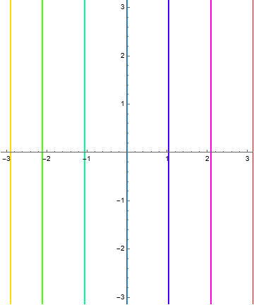
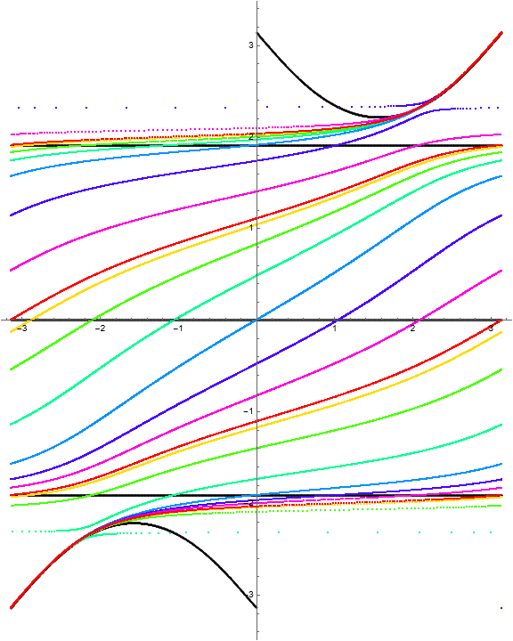
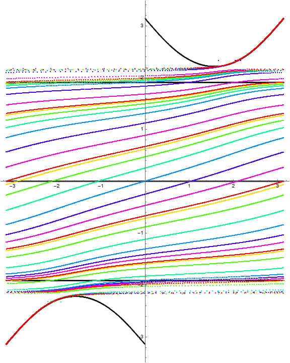
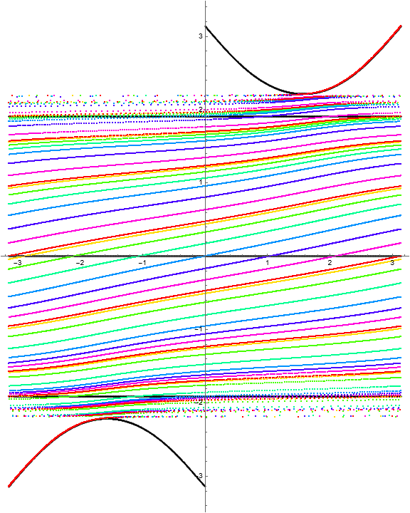
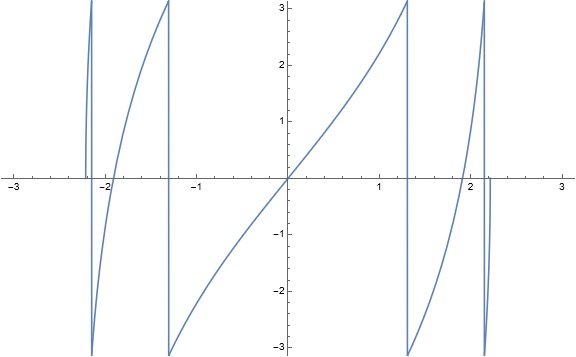
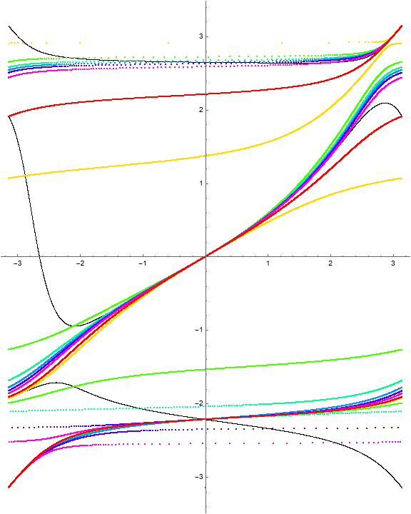
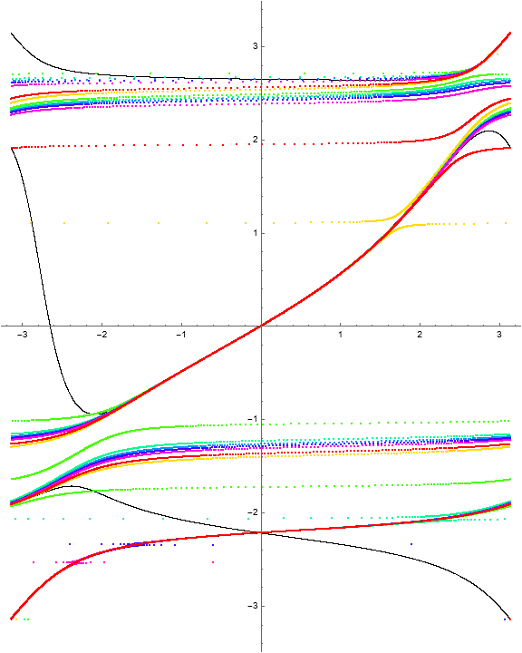
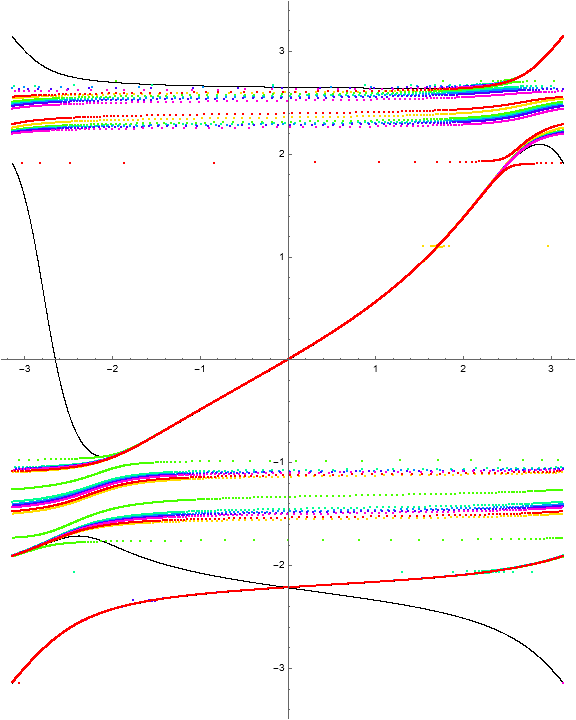

Notice that the level curves indicate that \(\Phi\) has a singular fixed point at \((z, w) = (1, -1)\)
The dynamical behavior for several iterations of \(\Phi\) is
(a)Vertical lines before mapping
(b)\(\Phi^n\) for \(n=1\)
(c)\(\Phi^n\) for \(n=2\)
(d)\(\Phi^n\) for \(n=3\)
Figure1.4.Iteration of \(\Phi\)
Because there are three horizontal invariant curves, we should observe four “stacked” rotation belts bounded by identity fiber maps. A computation of the multipliers as a function of \(w\) gives the following visualization.

Figure1.5.Rotation number as a function of fiber height
Notice that the level curves indicate that \(\Phi\) has singular fixed point at \((z, w) = (-1, -1)\) and \((z, w) = (1, -3/5 - 4/5i)\) and that each of these is a crossing of invariant curves.
The dynamical behavior for several iterations of \(\Phi\) is
(a)Vertical lines before mapping
(b)\(\Phi^n\) for \(n=1\)
(c)\(\Phi^n\) for \(n=2\)
(d)\(\Phi^n\) for \(n=3\)
Figure1.9.Iteration of \(\Phi\)
With a choice of \(a = Pi\text{,}\) the polynomial \(Q_a\) factors as
Here, unlike the \((1, n)\) RISP case, we see chaotic behavior. In particular, we do not get curves of fixed points. The dynamical behavior for several iterations of \(\Phi\) is